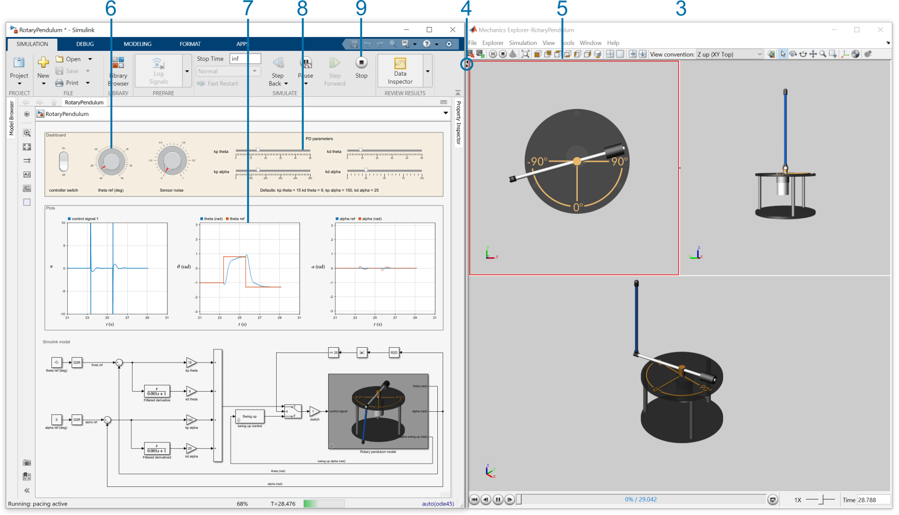
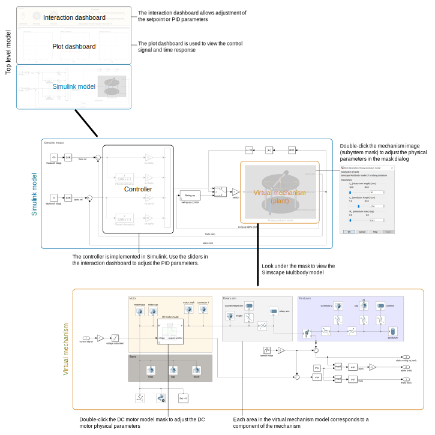

Virtual Mechanism Guide
🡄 Back to Virtual Controls Laboratory
Getting started
To get started with a virtual mechanism, perform the following.
- Open a virtual model from the Virtual Controls
Laboratory landing page (e.g., RotaryPendulum.slx).
- ▶ Run the Simulink model.
- Place the Mechanics Explorer window next to the Simulink window.
- Hide the Tree View Pane by clicking the small black arrow ◂.
- Select a Mechanics Explorer visualization pane and zoom in or out using the mouse scroll wheel.
- Change the controller setpoint using the reference dial to elicit a step response.
- View the response characteristics in the dashboard scope.
- Adjust the controller parameters and continue interacting.
- When you are finished, stop the model ■.

Illustration of steps 3-9
Model structure
Each model has three main components:
- An interaction layer at the top level of the model. This includes
dashboard blocks to interact with the controller and scopes to view
essential signals.
- The Simulink model. This is also included in the top level of the
model, just below the dashboards. The Simulink model implements
the controller. The plant is also present in the Simulink model as a
masked subsystem.
- The virtual mechanism. The mechanism is implemented using Simscape
Multibody. You can double-click the mask of the virtual mechanism to
adjust the physical parameters, such as the pendulum length.
These components are illustrated in the diagram below.

Copyright 2021 The MathWorks™, Inc.